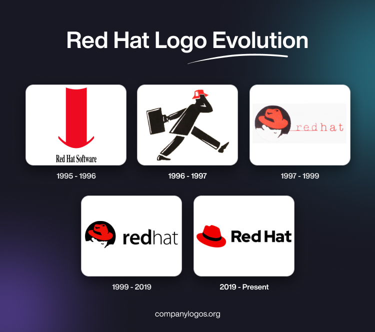

Home
UNIX
Bell Labs
Thompson e Ritchie
UNIX
Linguagem C
MINIX
LINUX
Richard Stallman
GNU
Linus Torvalds
Linux
Comunidade
Pinguim
Crescimnento
Distribuições
Sobrevivência
História
Sistemas operativos
Marc Ewing
Bob Young
RedHat 1924
RHEL 2002
Fedora 2004
IBM 2019
Evolução
Pré RedHat
RedHat
RHEL
Caraterísticas
Estabilidade
Segurança
Manutenção
Nuvem
Automação
RPM
Resumindo
Vantagens
Estabilidade
Suporte
Flexibilidade
Custo
Conservadorismo
Aprendizagem
Aplicações
Virtualização
Nuvem
Servidores
Segurança
Risco
Bases de Dados
Conclusão
